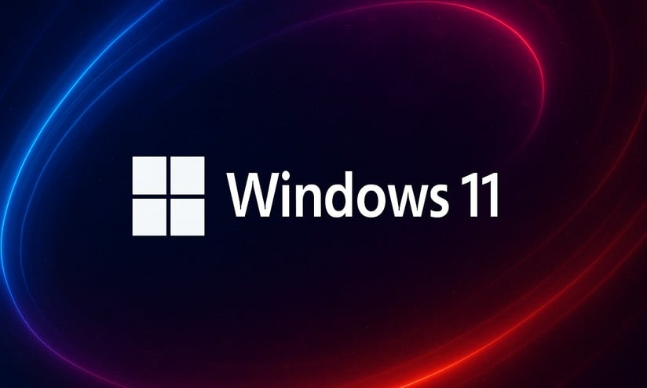

Sistemi Windows
Indice:
-
Origini e nascita di Windows
-
Evoluzione storica del sistema operativo
-
Architettura e caratteristiche principalix
-
Vantaggi di Windows
-
Svantaggi di Windows
-
Conclusione
Origini e nascita di Windows:
Windows nasce come interfaccia grafica sviluppata da Microsoft nei primi anni ’80, pensata per semplificare l’interazione con il sistema operativo MS-DOS, che fino ad allora funzionava solo tramite comandi testuali.
Il primo rilascio, Windows 1.0, avvenne nel 1985 e offriva finestre sovrapposte, icone e un mouse: elementi ispirati alle interfacce grafiche dei computer Apple Lisa e Macintosh, ma integrati nel mondo DOS.
Nei primi anni, Windows non era un vero sistema operativo autonomo: era un’estensione grafica del DOS. Solo con Windows 95 (1995) nacque un sistema completo, con un’interfaccia moderna, un kernel più evoluto e una gestione più diretta delle risorse hardware. Da lì Microsoft avviò il dominio di Windows nel mercato consumer, rendendolo lo standard de facto per i PC domestici e aziendali.
Evoluzione storica del sistema operativo:
Negli anni successivi, Windows si è evoluto rapidamente:
-
Windows NT (1993) introdusse un’architettura completamente nuova, più robusta, progettata per ambienti professionali e server.
-
Windows XP (2001) fu la fusione tra la linea consumer e quella professionale, offrendo stabilità, compatibilità e un’interfaccia più intuitiva.

-
Windows Vista (2007) portò importanti novità grafiche e di sicurezza, ma fu criticato per pesantezza e problemi di compatibilità.
-
Windows 7 (2009) risolse molti dei problemi di Vista, diventando uno dei sistemi più amati e longevi.
-
Windows 8 (2012) tentò di unificare desktop e mobile con un’interfaccia “a mattonelle”, ma non piacque molto agli utenti tradizionali.
-
Windows 10 (2015) ristabilì equilibrio tra interfaccia e funzionalità, introducendo aggiornamenti continui e integrazione con il cloud.
-
Windows 11 (2021) ha puntato su un design più minimale, nuove funzioni di sicurezza e ottimizzazione per processori moderni.

Architettura e caratteristiche principali:
Windows si basa su un kernel ibrido, derivato dalla famiglia NT, che unisce stabilità e compatibilità con l’hardware più diffuso.
È un sistema multitasking, multiutente e modulare, anche se fortemente orientato a un’esperienza “chiusa” e guidata da Microsoft.
Supporta una vastissima quantità di hardware e software, dal gaming alle applicazioni aziendali.S.
Negli ultimi anni Microsoft ha puntato molto su:
-
integrazione con il cloud (OneDrive, Azure),
-
sicurezza (Windows Defender, TPM, sandboxing),
-
interoperabilità con Linux tramite il Windows Subsystem for Linux (WSL),
-
esperienza unificata tra dispositivi desktop, tablet e Xbox.
Vantaggi di Windows:
Compatibilità universale: la maggior parte dei software commerciali, giochi e applicazioni professionali è sviluppata per Windows.
Supporto hardware esteso: quasi tutti i produttori di periferiche rilasciano driver ufficiali per Windows.
Facilità d’uso: interfaccia familiare e intuitiva per la maggior parte degli utenti, con un’esperienza coerente tra versioni.
Ecosistema vasto: milioni di utenti e sviluppatori, grande disponibilità di programmi e tutorial.
Gaming e multimedia: Windows è la piattaforma di riferimento per i videogiochi grazie al supporto diretto a DirectX, GPU moderne e periferiche.
Integrazione aziendale: Active Directory, Microsoft Office e strumenti enterprise lo rendono standard nel mondo del lavoro.
Svantaggi di Windows:
Licenza a pagamento: non è open source e richiede l’acquisto o l’attivazione della licenza.
Rischi di sicurezza: la sua popolarità lo rende bersaglio privilegiato di malware e ransomware, richiedendo aggiornamenti costanti e software di protezione.
Aggiornamenti forzati: gli update automatici possono essere invasivi o causare temporanei malfunzionamenti.
Prestazioni variabili: a seconda dell’hardware, Windows può diventare pesante o rallentato nel tempo.
Scarsa trasparenza del codice: l’utente non ha accesso diretto al sistema, e la personalizzazione profonda è limitata.e.
Telemetria e privacy: le versioni moderne raccolgono molti dati diagnostici, spesso criticati per scarsa chiarezza nella gestione della privacy.
Conclusione:
Windows è oggi il sistema operativo più diffuso al mondo, grazie alla sua compatibilità, semplicità e adattabilità a ogni tipo di utente.
Non è il più libero, né il più leggero, ma rimane la piattaforma più accessibile e versatile per uso domestico, professionale e videoludico..
La sua forza è nella familiarità e nell’ecosistema, ma la sua debolezza è proprio la chiusura: chi cerca controllo totale, trasparenza o efficienza assoluta potrebbe preferire alternative come Linux.
In sintesi, Windows è la colonna portante del computing moderno — un sistema che ha fatto la storia e che continua, tra aggiornamenti e critiche, a definire cosa significa “usare un computer”.
Contacts: